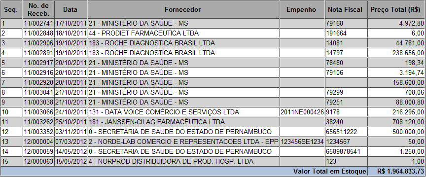
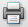

Histórico de Recebimentos [ Voltar ]Utilize esta tela para gerar um relatório contendo o histórico dos recebimentos já registrados no sistema. O relatório pode ser gerado para apenas um período de tempo, local, fornecedor, produto, entre outras opções.O formulário "Histórico de Recebimentos" encontra-se dentro do menu "Relatórios Gerenciais".
Siga os passos abaixo para efetuar a consulta de histórico de recebimentos:

Para gerar o relatório, clique no botão Se desejar imprimir o relatório, clique no botão  [Imprimir] do navegador. Para voltar à tela anterior, clique em  [Voltar]. [Voltar]. |
 para selecionar a data
desejada. Dicas para preenchimento de campos de data:
para selecionar a data
desejada. Dicas para preenchimento de campos de data: [Procurar] para selecionar o programa a partir de uma lista de programas cadastrados;
[Procurar] para selecionar o programa a partir de uma lista de programas cadastrados; para processar a consulta.
para processar a consulta.